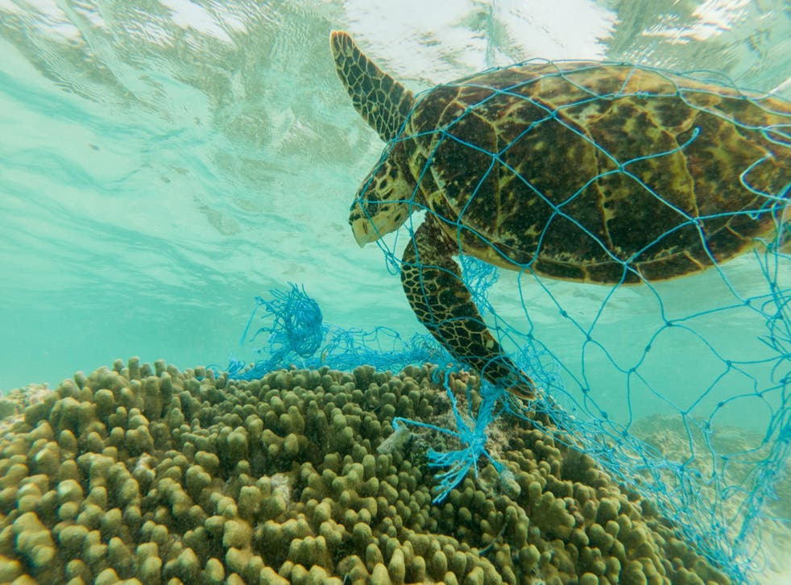

Plastics are a vital asset for humanity, often providing functionality that cannot be easily or economically replaced by other materials. Most plastics are robust and last for hundreds of years. They have replaced metals in the
components of most manufactured goods, including for such products as computers, car parts and refrigerators, and in so doing have often made the products cheaper, lighter, safer, stronger and easier to recycle.[1] Plastics have
taken over from paper, glass and cardboard in packaging, usually reducing cost and carbon emissions while also providing better care of the items that they protect.
But we all know about the counterbalancing disadvantages.
- Plastic litter disfigures the oceans and the coastlines. Ingestion of plastic kills marine creatures and fish. Perhaps 5% of the world’s cumulative output of plastic since 1945 has ended up in the oceans. Shopping bags and other packaging are strewn across the streets and fields of every country in the world.
- Plastics use valuable resources of oil
- The plastics industry uses large amounts of energy, usually from fossil fuel sources which therefore adds to the world’s production of greenhouse gases.
- The durability of plastics means that without effective and ubiquitous recycling we will see continuing pressure on landfill. Although plastics do not represent the largest category of materials entering landfill – a position held by construction waste – they are a highly visible contributor to the problems of waste disposal.
- The manufacturing of conventional plastics uses substantial amounts of toxic chemicals.
- Some plastics leach small amounts of pollutants, including endocrine disruptors, into the environment. These chemicals can have severe effects on animals and humans. (The solution to this problem is to avoid using original raw materials - either monomers or plasticizers -that might produce such compounds when the plastic is in use or has been discarded).
The world needs to find a solution that gives us continued access to plastics but avoids these serious problems.
What is a bioplastic?
A bioplastic is a plastic that is made partly or wholly from polymers derived from biological sources such as sugar cane, potato starch or the cellulose from trees, straw and cotton. Some bioplastics degrade in the open air, others are made so that they compost in an industrial composting plant, aided by fungi, bacteria and enzymes. Others mimic the robustness and durability of conventional plastics such as polyethylene or PET. Bioplastics can generally be directly substituted for their oil-based equivalent. Indeed, they can generally be made to be chemically identical to the standard industrial plastics.Plastics are regarded with deep ambivalence in the much of the world. Their association with indestructible and unsightly litter sometimes blinds us to their enormous value. Bioplastics – with a low carbon footprint and the capability of being made to completely degrade back to carbon dioxide and water – are a vital and growing complement to conventional oil-based plastics. They can be made to completely avoid the use of the monomers and additives that may have effects on human or animal health. As oil becomes scarcer, the value of bioplastics will increase yet further.

Plastics
About 4% of the world’s oil production is converted into plastics for use in products as varied as shopping bags and the external panels of cars. Another few percent is used in processing industries because oil-based plastics require substantial amounts of energy to manufacture. Each kilogramme of plastic typically requires 20 kilowatt hours of energy in the manufacturing process, more than the amount needed to make steel of the same weight. Almost all this comes from fossil sources. One survey suggested that the plastics industry was responsible for about 1.5% of allUSenergy consumption.
The world plastics industry and the role of bioplastics.
The annual output of the world’s plastics industry is about 225 million tonnes a year.[5] This number has grown by a few per cent per year over the last decade. The bioplastics industry is much smaller, with 2011 probably seeing a total output of about 1m tonnes, or less than half of one per cent of total world plastics output. But the growth rate of bioplastics is much higher. Most sources suggest that this part of the plastics industry is growing at least 20% a year. The reasons for this buoyancy are discussed later in this note.Not even the most fervent advocates of the bioplastics suggest that they will quickly replace all oil-derived compounds though most people expect rapid growth to continue.